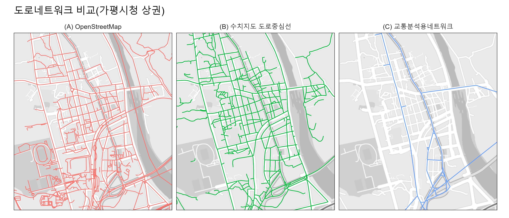

TL;DF
- 보행자, 차량 도로망 DB는 일반적으로
수치지도 도로중심선를 쓰자 - 접경지대 등 수치지도를 쓸 수 없다면 대안으로
OpenStreetMap을 사용하자 - 서울이 연구 대상지라면
서울시 자치구별 도보 네트워크 공간정보를 사용하자
도로망 데이터셋 개요
한국에서 보행자, 차량 네트워크 분석 용도로 취득 가능한 데이터셋은 다음과 같다:
| 데이터셋 | 출처 | 장점 | 단점 |
|---|---|---|---|
| (A) 수치지도 도로중심선 | 국토지리정보원 | 공인 기관에서 제작한 일관된 품질 | 접경지역 등 일부 지역 데이터 취득 불가 |
| (B) OpenStreetMap | OSM | 수치지도에 못지 않은 준수한 품질 | 참여도에 따른 편차 |
| (C) 교통분석용네트워크 | 국가교통DB | 간편한 취득 방법 | 네트워크 밀도가 낮음 |
| (D) 표준노드링크 | 국토교통부 | 간편한 취득 방법 | 시도 내 이동 등 상세 분석에 부적합 |
| (E) 서울시 도보 네트워크 | 서울열린데이터광장 | 고해상도 품질 | 서울시로 한정 |
데이터셋 검토
1차 검토
1차 검토 과정에서 (D) 표준노드링크와 (E) 서울시 자치구별 도보 네트워크 공간정보는 네트워크 분석에 적합하지 않거나 연구 대상지에서 제공되지 않아 제외한다.
(D) 표준노드링크
각 링크가 제대로 연결되어 있지 않고, 일부 링크는 연결되어야 할 지점을 넘어서 연장되어 있는 형태로 네트워크 분석이 불가능하다.
(E) 서울시 자치구별 도보 네트워크 공간정보
서울시 자치구별 도보 네트워크 공간정보는 도보 네트워크에 특화된 데이터로, 서울을 연구대상지로 하는 다양한 연구에서 활용 중인 것으로 보인다. 하지만 서울시만 구축되어 있어 다른 지역 연구에는 활용이 어렵다.
2차 검토
A, B, C 도로망 DB을 3개 상권을 대상으로 시각화하여 비교한다.

(A) 수치지도 도로중심선
국가에서 공인한 수치지도를 기반으로 한 네트워크로, 가장 일반적인 도로 네트워크 형태를 보여준다.
하지만 접경지역에 수치지도가 제공되지 않는다. 아래와 같이 김포, 파주 등 일부 지역에서는 1:5000 수치지도 다운이 불가능하며, 이를 추출한 도로중심선도 사용할 수 없다.
(B) OpenStreetMap
OpenStreetMap은 별도 설치가 필요없이 QGIS, Python 등에서 다루기 쉽다. 사용자 참여도가 높은 지역(예: 일산호수공원)에서 매우 상세한 네트워크를 제공하며, 상대적으로 참여도가 낮을 것으로 예상되는 지역(예: 가평시청, 양평역)에서도 준수한 수준의 네트워크를 가진다.
(C) 교통분석용네트워크
전반적으로 네트워크 밀도가 낮아 상세한 분석에는 적합하지 않다. 일부 지역(예: 양평역 상권)에서는 도로 네트워크가 거의 표현되지 않았다. 대규모 교통 흐름 분석에 더 적합할 것으로 보인다.
결론
이상의 검토 결과를 바탕으로, 도로 네트워크 분석을 위한 데이터셋 선택에 대해 다음과 같은 결론을 도출할 수 있습니다:
- 일반적인 도로 네트워크 분석
- 추천 데이터셋: 수치지도 도로중심선
- 이유: 공인된 기관에서 제작한 일관된 품질의 데이터로, 신뢰성이 높음
- 주의사항: 접경지역 등 일부 지역에서는 데이터 취득이 불가능할 수 있음
- 접경지역 또는 상세 도시 분석
- 추천 데이터셋: OpenStreetMap
- 이유: 수치지도를 사용할 수 없는 지역에서도 준수한 품질의 데이터 제공
- 장점: 사용자 참여도가 높은 지역에서는 매우 상세한 네트워크 정보 제공
- 대규모 교통 흐름 분석
- 추천 데이터셋: 교통분석용네트워크
- 이유: 광역적인 교통 흐름 분석에 적합한 네트워크 구조
- 한계: 상세한 도로 정보가 필요한 미시적 분석에는 부적합
- 서울시 특화 연구
- 추천 데이터셋: 서울시 자치구별 도보 네트워크 공간정보
- 이유: 서울시 내 고해상도의 상세한 보행자 네트워크 정보 제공
- 한계: 서울시 외 지역에는 적용 불가